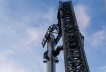
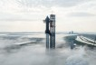

"화성 개척 눈앞에"…스페이스X '스타십', 오늘 첫 완전체 발사
기사내용 요약 스페이스X, 17일 스타십-슈퍼 헤비 로켓 첫 궤도 비행 테스트 사상 최대·최고 성능 로켓…다른 행성 향하는 '우주 여객선'[서울=뉴스페 ...

"마지막 관문 통과했다" 스페이스X 스타십, 17일 비행 목표
미국의 민간 우주탐사 기업 스페이스X가 달과 심우주 여행에 투입하기 위해 개발해 온 우주선 '스타십'(Starship)이 지구궤도 시험 비행을 위한 마지 ...